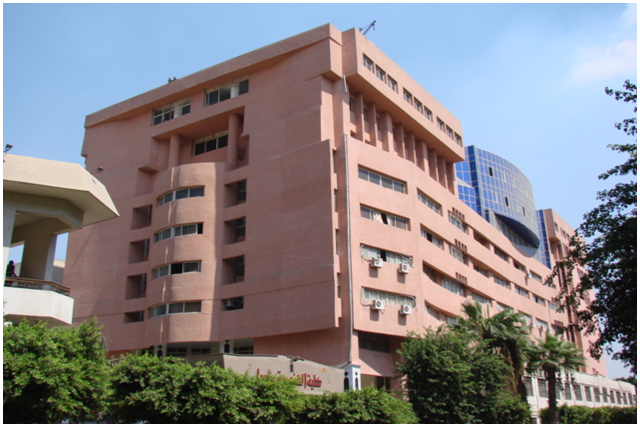

The engineering department also encourages teamwork and creativity among students. Through group projects and lab work, students learn how to collaborate and communicate effectively. Modern engineering departments use advanced tools and technologies to help students gain hands-on experience. This prepares them for future careers and helps them adapt to the fast-changing world of technology.
